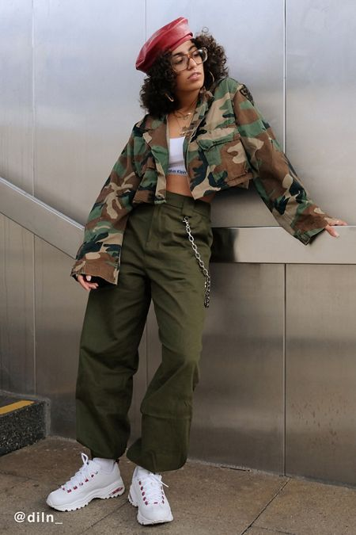
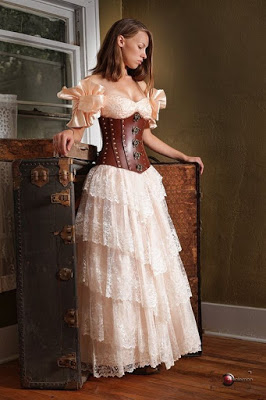
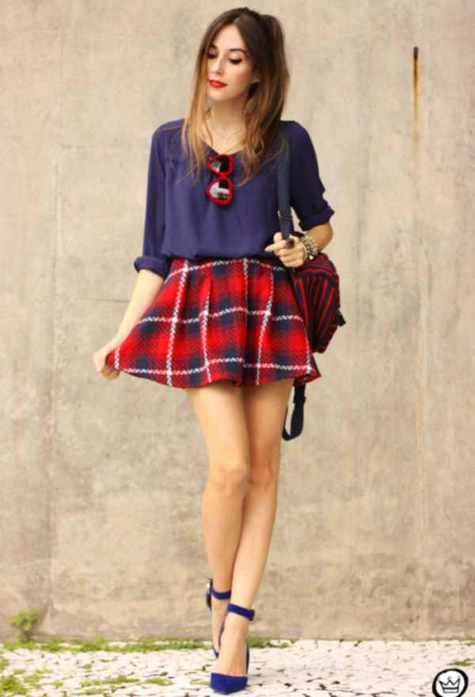

Street Wear Urban
Urban street wear is the look of the inner city. Its jeans, plan or graphic tees, sweats, hoodies, sneakers, or boots. This look is more causal than a disigner urban look.
Steam Punk
Steampunk is concepts of the future combined with the technology of the past. It fashion is derived from the Victorian and Western era. Inspired by the writings of H. G. Wells and Jules Verne.
Preppy Style
A look that was born in the prep schools of America. Some classic silhouettes include a collared blouse underneath a sweater, a feminine blouse with a pussy-bow tied in the front, flowing blouses with ruffled sleeves, and more. Pair a long-sleeve blouse with a pair for blue jeans for a summery casual look.